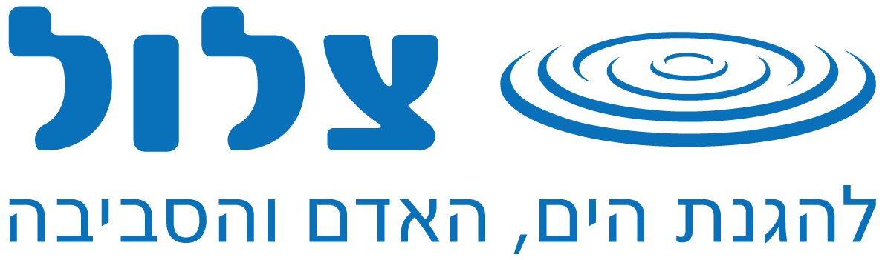

שעתיים בחוף. שיחקנו, אכלנו, שתינו, בנינו ארמון בחול וחזרנו הביתה.
לפני שיוצאים לנקות, בואו נבין מה בעצם קורה לפסולת שנשארת שם.
מה מחכה לכם כאן:
הסביבה בנויה כעשר תחנות שמקבילות למבנה השיעור. אפשר להקרין על מסך הכיתה ולנווט יחד, או לתת לתלמידים לעבוד בזוגות על מחשב או טאבלט.
מטרת המערך: להפוך את יום הניקיון מ"איסוף לכלוך" לחוויה לימודית. התלמידים יבינו מהי פסולת חד־פעמית, מדוע פלסטיק הוא בעיה, לאן מגיעה הפסולת מהחוף, מהו מיקרופלסטיק, מדוע מניעה חשובה יותר ממיחזור, ומה אפשר לעשות אחרת ביום־יום.
קהל יעד: בית ספר יסודי. המלצה: השאירו את מצב המורה פעיל אצלכם בלבד, הוא מציג את ההנחיות והתשובות.
בחוף שלפניכם מסתתרים 8 פריטי פסולת שמישהו השאיר. מצאו אותם.
מה קורה לפסולת הזאת אם אף אחד לא אוסף אותה? האם היא פשוט נעלמת?
לא. בתחנה הבאה נראה בדיוק לאן היא הולכת.
קבלו את תשובות התלמידים ללא שיפוט, אפשר לכתוב על הלוח במקביל למה שנאסף על המסך: בקבוק, שקית, עטיפה, כוס, בדל סיגריה, צעצוע, קשית, כלי אוכל, שקית חטיפים.
בשלב הזה אין צורך לתת את כל התשובות, המטרה היא לעורר סקרנות לקראת הפעילות.
פסולת שנשארת על החוף לא בהכרח נשארת במקום שבו הושלכה. בחרו מסלול ועקבו אחריו.
ארבעה מסלולים, יעד אחד. מה שנשאר על החול לא נשאר על החול. רובו מגיע לים, ורובו עשוי מחומר אחד.
עודדו את הילדים לחשוב על המסלולים לבד לפני שלוחצים: חוף ← רוח ← ים, חוף ← גשם ונגר ← ים, חוף ← בעלי חיים, חוף ← התפרקות לחלקיקים קטנים.
שווה לחבר לנגר העירוני: פסולת שנזרקת ברחוב בעיר מגיעה גם היא דרך תעלות הניקוז אל הים, לא רק פסולת שנשארה בחוף עצמו.
פלסטיק הוא חומר מצוין. זול, קל, חזק וגמיש, ולכן הוא נמצא כמעט בכל מקום. הבעיה מתחילה כשמשתמשים בו כמה דקות בלבד.
כמה זמן לדעתכם הפריט הזה יכול להישאר בסביבה?
הערכות מקובלות בספרות הסביבתית. משך ההתפרקות משתנה מאוד לפי תנאי הסביבה.
שימו לב לפער. משתמשים דקות, נשאר שנים. וגם אז הפלסטיק לא באמת "נעלם", הוא רק נעשה קטן יותר.
שלושה מסרים מרכזיים:
אין צורך להיכנס לפרטים כימיים. אם יש בכיתה פריטים אמיתיים, אפשר להרים אותם ולשאול לפני הלחיצה על המסך.
כשחתיכת פלסטיק גדולה מתפרקת לחתיכות קטנות, הבעיה לא נפתרת. היא נעשית קשה יותר לטיפול. העבירו את זכוכית המגדלת על החול ולחצו על כל חלקיק שתמצאו.
קשה, נכון? וזה רק על מסך. בחול אמיתי החלקיקים קטנים עוד יותר, ולפעמים בכלל לא נראים לעין.
כשהפלסטיק נעשה קטן יותר, הרבה יותר קשה לאסוף אותו. לכן עדיף למנוע ממנו להגיע לסביבה מלכתחילה.
מיקרופלסטיק הוא חלקיקי פלסטיק זעירים מאוד, שנוצרים כשפלסטיק גדול מתפרק לאורך זמן.
המשחק הזה הוא הדמיה. אם הפעילות מתקיימת אחר כך בחוף, חזרו לשאלה בשטח ובקשו מהתלמידים לבחון חופן חול אמיתי.
משפט מפתח לסיכום התחנה: כשהפלסטיק נעשה קטן יותר, הרבה יותר קשה לאסוף אותו, ולכן עדיף למנוע ממנו להגיע לסביבה מלכתחילה.
בכל שנה מגיעים לים כ־11 מיליון טון פלסטיק. קשה לדמיין מספר כזה, אז בואו נראה אותו זז.
ניקיון חופים חשוב, כי הוא מוציא פסולת מהסביבה ומאפשר לנו לראות במו עינינו את הבעיה.
אבל ניקיון לבדו אינו מספיק. אם נמשיך לייצר ולהשתמש בכמויות גדולות של חד־פעמי, נמשיך לייצר פסולת. לכן יש סדר עדיפויות, ובתחנה הבאה תסדרו אותו בעצמכם.
אין צורך להעמיס בנתונים, שלושת המספרים על המסך מספיקים. המחשה חשובה יותר ממספר מדויק.
זהו מעבר קריטי מהבנה לפעולה. אל תמהרו לענות, תנו לתלמידים להתלבט. הסדר שאליו רוצים להגיע: קודם למנוע, אחר כך להפחית ולהשתמש שוב, אם אפשר לתקן, וכל מה שכבר יוצר, למחזר.
צב ים אוהב לאכול מדוזות. לפניכם שישה דברים שצפים במים. לחצו על שלושת אלה שנראים לכם מדוזה.
כי במים, שקית שקופה שמתנופפת נראית כמעט בדיוק כמו מדוזה. בעלי חיים אינם יודעים מהו "זבל" ומהו מוצר שיוצר במפעל. הם פוגשים את הפסולת כחלק מהסביבה שלהם.
וזו לא רק בליעה. חוטים, רשתות ופריטי פלסטיק אחרים עלולים לגרום להסתבכות ולפגיעה קשה. וכשהפלסטיק מתפרק לחלקיקים קטנים, הוא נכנס לסביבה הימית ולמערכות המזון.
לכן הפסולת שאנחנו משאירים בחוף היא לא רק "לכלוך". היא יכולה להפוך לבעיה עבור הים, בעלי החיים וגם עבורנו.
במקום הרצאה כללית על פגיעה בבעלי חיים, התמקדו בסיפור של צב ים כמייצג שמייצר חיבור ורגש.
שאלות פתיחה: איפה חי צב ים? מה הוא אוכל? אילו דברים הוא פוגש כשהוא שוחה בים?
תנו לתלמידים להציע השערות לפני שאתם מסבירים. המשחק תוכנן כך שקל לטעות, וזו בדיוק הנקודה. אם הכיתה טועה, אל תתקנו מיד, שאלו "מה הטעה אתכם?".
לא כל פתרון מתחיל במיחזור. יש סדר עדיפויות. סדרו את חמשת השלבים מהחשוב ביותר (1) לאחרון (5) בעזרת החצים.
ככל שהשלב רחב יותר, כך הוא עדיף
זכרו: הפתרון הטוב ביותר הוא לא לייצר את הפסולת מלכתחילה.
מיחזור הוא חשוב, אבל הוא לא הפתרון הראשון. הוא האחרון ברשימה.
לחיצה על כל שורה פותחת את ההסבר המלא שלה. אחרי הבדיקה, עברו שלב שלב ובקשו דוגמה מהחיים של התלמידים לכל שלב.
הדגישו: העדיפות הראשונה היא למנוע פסולת. המיחזור נמצא בסוף הרשימה, לא בהתחלה. זו לרוב ההפתעה הגדולה של השיעור, כי ילדים מגיעים עם "מיחזור = הפתרון".
לא רשימת טיפים. בחרו שלושה דברים שאתם באמת מתכוונים לעשות בביקור הבא שלכם בחוף.
נבחרו 0 מתוך 3
פעולה קטנה של אדם אחד יכולה להפוך לפעולה גדולה כשעושים אותה יחד.
במקום רשימה ארוכה של טיפים, בקשו מהתלמידים לנסח "שלושה דברים שאני יכול לעשות בביקור הבא שלי בחוף". הבחירה האישית שווה יותר מרשימה שהוכתבה.
במחשבון: אפשר להזין את מספר התלמידים האמיתי בכיתה, ואז להכפיל במספר הכיתות בבית הספר. זה הרגע שבו המספר הופך למוחשי.
הדגישו שוב: מיחזור חשוב, אבל הדרך הטובה ביותר להתמודד עם פסולת היא להפחית את הצריכה שלה מלכתחילה.
אנחנו כבר יודעים מה הבעיה. שהפסולת מגיעה מהחוף אל הים. שפלסטיק נשאר בסביבה זמן רב ומתפרק לחלקיקים קטנים. ושבעלי חיים נפגעים ממנו. עכשיו הגיע הזמן לראות את זה בעצמנו.
בכל הארץ, בו זמנית, קבוצות של מתנדבים ותלמידים כמוכם ינקו חופים ונחלים. תחשבו איזו עוצמה ואיזה מסר חשוב יש לזה.
במהלך הניקיון נסו לגלות:
חשבו על שאלה אחת שאתם רוצים לקבל עליה תשובה במהלך יום הניקיון. כתבו אותה כאן, היא תישמר במכשיר.
חלקו לתלמידים משימת חקר. כל תלמיד או קבוצה שמים לב ל: איזה סוג פסולת מצאנו, מהו הפריט הנפוץ ביותר, האם רוב הפסולת היא פלסטיק, אילו פריטים אפשר היה למנוע מלכתחילה, אילו היו חד־פעמיים, אילו נראים כאילו הגיעו מבילוי בחוף ואילו הגיעו ממקום אחר.
אין צורך לתת לתלמידים את התשובה מראש. המטרה היא שהם יגיעו אליה באמצעות ההתנסות ביום הניקיון.
ניקיון החופים והנחלים הארצי של עמותת "צלול". קבוצות מכל הארץ, באותו יום, באותה שעה.
קמפיין "מרימים אחד ביום" של המועצה לישראל יפה. פריט פסולת אחד ביום, כל יום, כל אחד.
merimim.israel-yafa.org.il
"ראינו את הבעיה. הבנו לאן הפסולת יכולה להגיע. הבנו איך היא יכולה להשפיע על בעלי החיים.
עכשיו אנחנו יוצאים לעשות משהו בקנה מידה קטן, אבל אמיתי."
צלול · עמותה להגנת הים, החופים והנחלים · להגנת הים, האדם והסביבה
כאן הופכים את הניקיון מהודעה טכנית לפעולה בעלת משמעות. הדגישו שמעצם ההגעה לפעילות אנחנו מהווים דוגמה אישית לכל מי שנמצא בחוף באותו יום.
לבדיקה לפני השיעור: אשרו מול העמוד באתר צלול את התאריך, השעות ואתר הניקיון שאליו הכיתה נרשמת, ועדכנו את הפרטים בכרטיס למעלה בהתאם.